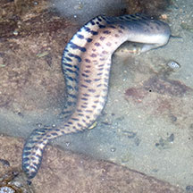
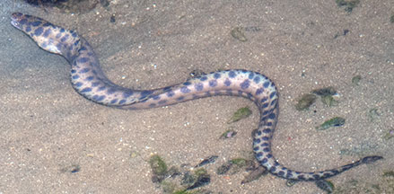
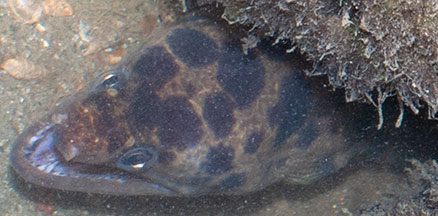
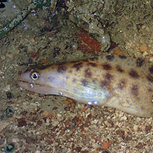
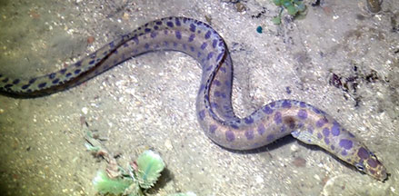

|
|
| fishes text index | photo index |
| Phylum Chordata > Subphylum Vertebrate > fishes > Family Muraenidae |
| Brown-spotted
moray eel Gymnothorax reevesii Family Muraenidae updated Sep 2020 Where seen? This spotted snake-like fish is sometimes seen on our Northern shores, near reefs and among coral rubble. Sometimes just the head is poking out of its lair. At night, can be seen hunting actively in shallow water, lunging suddenly when prey is spotted. Features: To about 60cm. Body a cylinder flattened sideways, pinkish brown with large dark brown roundish blotches. No pelvic or pectoral fins. Dorsal and anal fins extend over the entire length of the long body and are continuous with the tail fin, resulting in the typical eel-like profile. Instead of scales, it has thick, smooth skin. Jaws large strong and filled with lots of sharp teeth. Eyes small. A pair of tubular nostrils at the tip of the snout, and small circular gill openings. It swims by undulating its muscular body in S-shapes, rather like a snake. Sometimes mistaken for sea snakes. Here's more on how to tell apart sea snakes, eels and eel-like animals. |
 Lunging after prey in a hole with flaring of long dorsal fins. Tanah Merah, Oct 09 |
 Tanah Merah, Jun 11 |
|
 Sharp teeth and tubular nostrils. Tanah Merah, Jun 11 |
| Brown-spotted moray eels on Singapore shores |
On wildsingapore
flickr
|
| Other sightings on Singapore shores |
 Beting Bronok, Jun 17 Photo shared by Toh Chay Hoon on facebook. |
 Beting Bronok, Jul 19 Photo shared by Jianlin Liu on facebook. |
Links
|